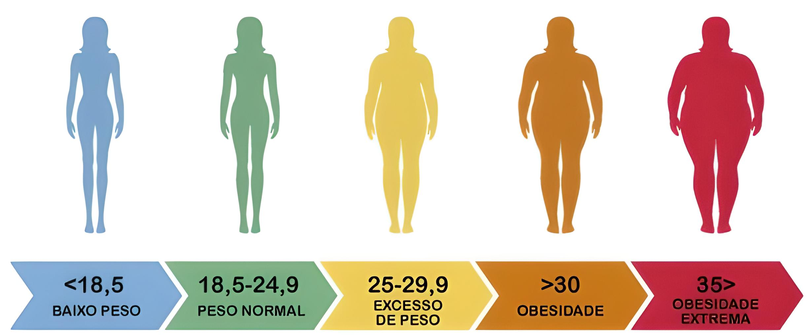

O que é IMC?
O Índice de Massa Corporal, conhecido pela sigla IMC, foi criado no século 19 pelo matemático Lambert
Quételet é um cálculo simples que permite medir se alguém está ou não com o peso ideal. Ele aponta se o peso
está adequado ou se está abaixo ou acima do peso, Para fazer o cálculo, basta dividir o peso pela altura ao
quadrado.

Calcule seu IMC: